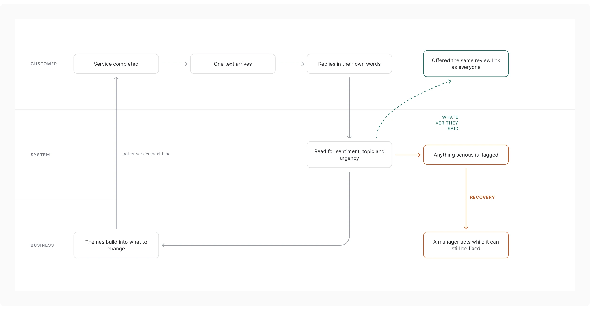
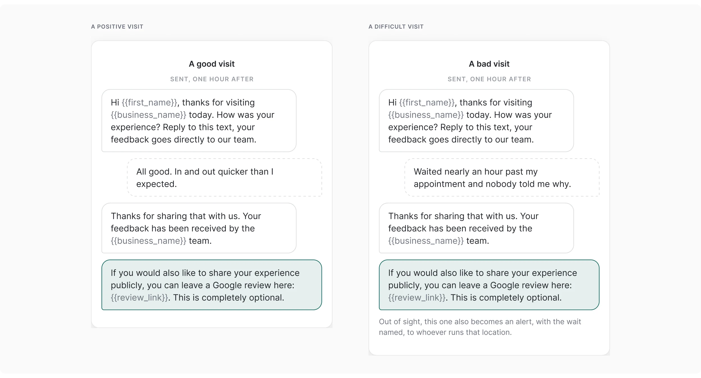
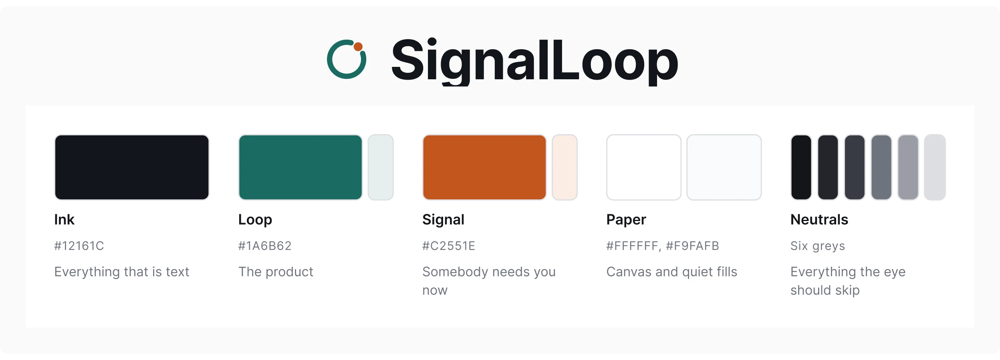
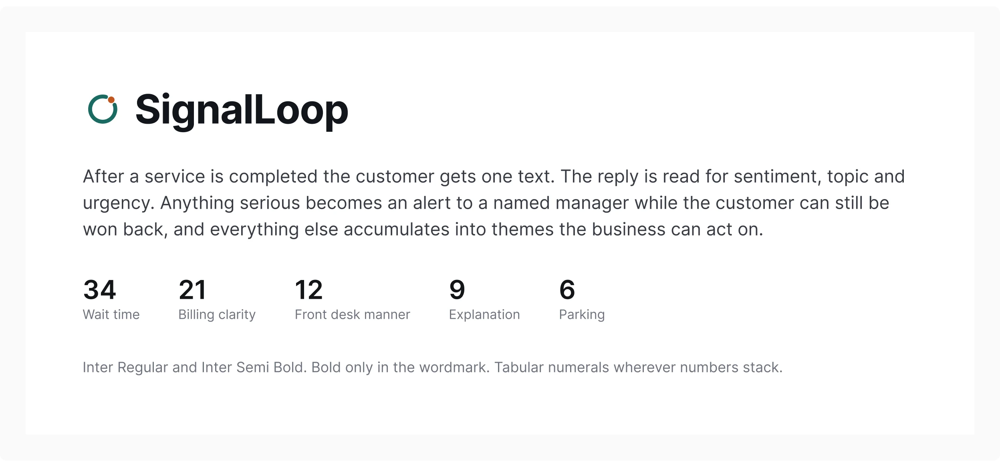
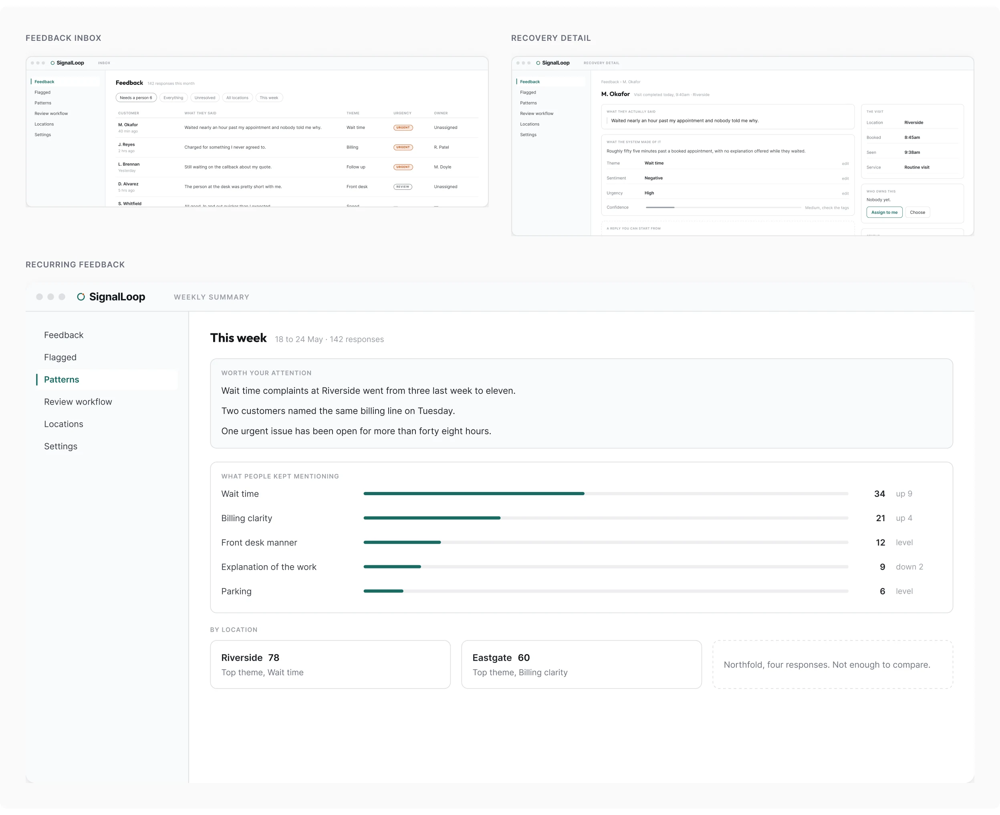
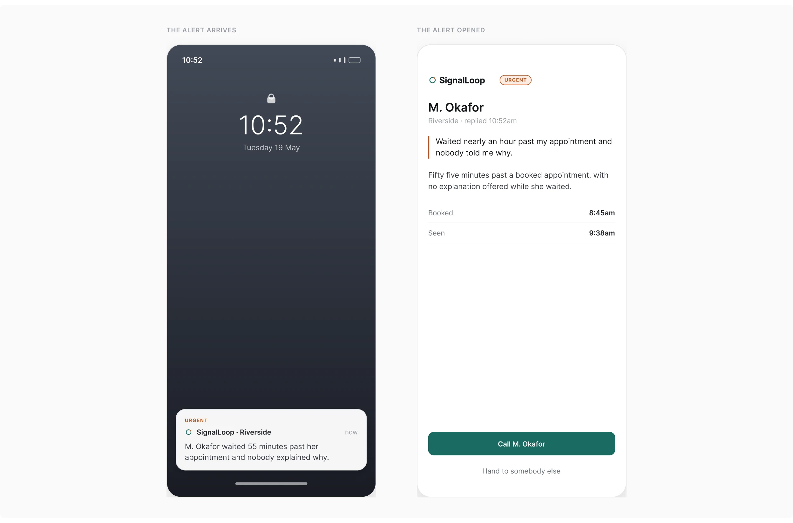
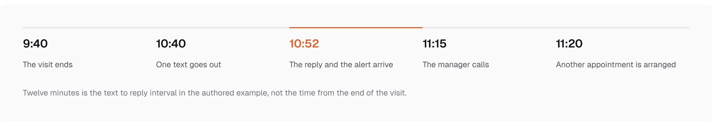

Independent concept / Service feedback
SignalLoop
Customer feedback that leads to a manager's next action
SignalLoop is a concept for service businesses: ask for feedback by text after a visit, organize the replies, and bring urgent problems to a named person. I developed the product, messaging, manager screens, and identity.
Role
Product design, interaction design, messaging, manager UI, and identity.
Conditions
Nothing here is a measurement.
The replies, the manager screens, and the recovery journey illustrate the proposed experience. No response time, recovery rate, or customer outcome is claimed.
The specimen data belongs to a concept.
Names, quotes, and counts on the manager screens were authored for this work.
The response
Design the response, not just the request
Where it fragments
The starting problem was fragmented feedback: a comment at the desk, an email, and a complaint may describe the same issue without reaching the same person.
The loop
I focused the concept on what happens after the reply. The loop connects a completed visit to a feedback request, the customer's words, a manager's action, and a record that can reveal recurring problems.

Customer messages
Ask in the channel the customer already has
The same question
The customer receives a question they can answer by replying to the text. There is no separate form between the visit and their account of it.

The same invitation
The paired conversations show different experiences but the same final review invitation. Feedback affects the recovery workflow, not eligibility to leave a public review. That decision keeps the product focused on service recovery rather than using private feedback to select whose reviews are invited.
Visual identity
Let the identity support attention
The mark and the palette
I carried the mark and restrained palette into the manager interface. The stronger warm accent draws attention to urgent states, while the surrounding screens remain quieter.

Reading hierarchy
The identity supports the reading hierarchy: where to look, what needs attention, and what can wait.

Manager experience
Give the manager three useful views
Three views
The inbox prioritizes replies that need a person. The detail view keeps the customer’s original words available alongside the interpretation, editable tags, and a draft response. The reporting view brings repeated topics into view across the feedback received.

Who sends the reply
I kept the manager in control of the response. A suggested reply is something to review, not an apology sent automatically.
Urgent response
Make the urgent alert actionable
From lock screen to action
The phone example reduces the issue to a customer quote, contact information, and a call action. It is designed for a manager who needs to decide what to do without opening a full dashboard.

The authored scenario
The timeline illustrates that intended sequence. It is a scenario, not a measured response time or recovered customer.

Operational fit
Design for a business that can respond
What it assumes
The concept assumes a usable service completion event and a named person who can act on feedback. Collecting replies is not enough without that operational ownership.
Delivery & scope
A specified concept, not a launched product
The replies, manager screens, and recovery journey illustrate the proposed experience. No measured response time, recovery rate, or customer outcome is claimed.
- Surfaces: customer SMS, a manager alert, and three desktop views
- I developed the product, the messaging, the manager screens, and the identity
- Specified in full, not built
- Catch and ShopSmartAutos are covered in separate case studies